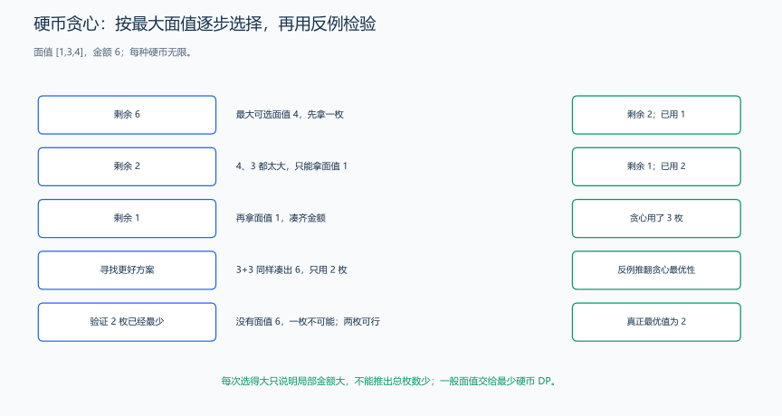
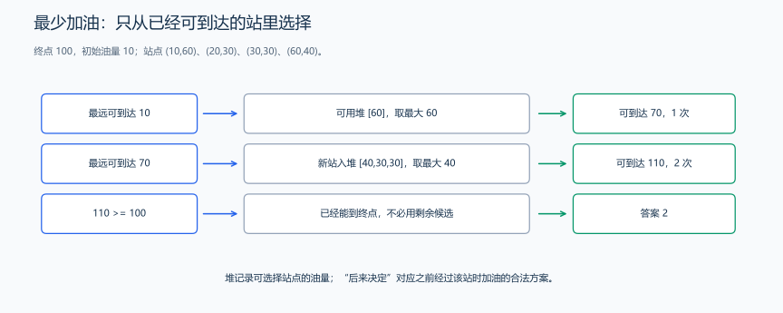
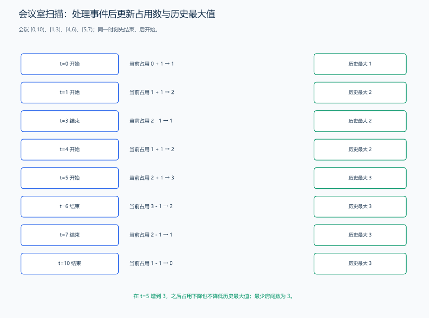
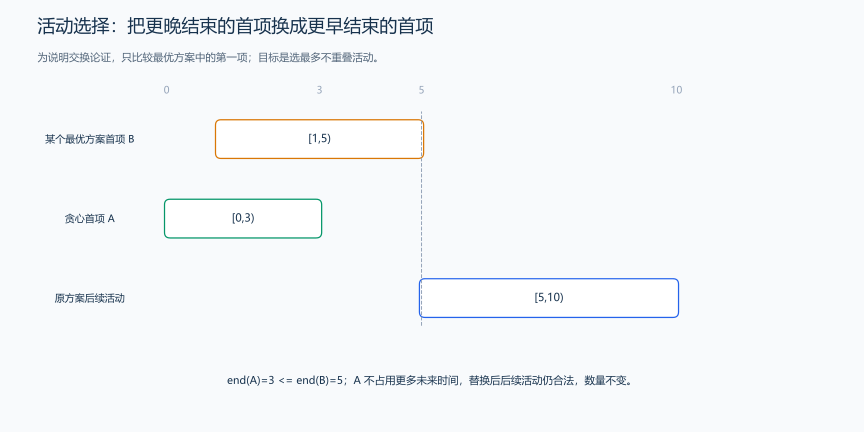

（十一） 贪心算法
有些任务可以逐次选择当前最合适的候选，但“看起来最好”还不足以证明正确。先尝试具体选择，再用替换、交换或反例判断它能否推广。
1. 逐步选择当前最有利的决策
贪心算法是指在求解问题时，每一步都 选择当前看起来最优的策略，从而期望得到全局最优解。
核心思想：
局部最优策略 → 全局最优解
但贪心并不总是正确，使用前需证明：
- 贪心选择性质（每次局部最优可构成全局最优解）
- 最优子结构（问题可分解成子问题，每个子问题也可使用贪心）
2. 从题目结构寻找贪心策略
| 场景 | 特征 |
|---|---|
| 每一步做局部最优能得到全局最优 | 如区间问题、最短作业时间、最小钱币数量 |
| 解可以逐步构造并可修改 | 动态增量策略 |
| 具有单调结构 | 解越走越接近最终答案 |
3. 贪心策略的例题与反例
3.1 最少硬币：贪心反例
题目原文（自拟实验）： 给定正整数面值数组和非负金额 M，按“每次尽量取不超过剩余金额的最大面值”运行贪心策略，返回这一策略选择的硬币数量；走到无法继续时返回失败。用 [1,3,4]、M=6，以及 [2,3,5]、M=9 检验它是否总能得到最少硬币，并与后面 DP 的正确答案比较。这个实验代码展示策略的失效，不是通用最优解。
给定不同面额的硬币 \([c1, c2, ..., ck]\) ，以及一个总金额 \(M\) 。每种硬币数量无限，问用最少的硬币数量凑出金额 \(M\) 。

同样凑出 6，局部选择最大面值会多用一枚硬币。后面的最少硬币 DP 会求得全局最优值。
#include <vector>
#include <algorithm>
using namespace std;
int count(int amount, vector<int> &coins) {
sort(coins.begin(), coins.end());
int used = 0;
for (auto it = coins.rbegin(); it != coins.rend(); ++it) {
used += amount / *it; // 当前面值可取 amount / *it 枚
amount %= *it;
}
return amount == 0 ? used : -1;
}这个题解对随意面值贪心策略无法求出最优解甚至会导致无解
例如面值 1 3 4 求 6，4+1+1，但最优解为 3+3
面值 2 3 5 求 9，5+3+！无解，但其实有解 5+2+2
3.2 最少加油次数：用堆选择已途经的站点
题目原文（自拟）： 车辆从位置 0 出发，终点在 d >= 0，初始油量为 m >= 0。每行驶一单位距离消耗一单位油，油箱容量不受限制。若干站点以 (位置,油量) 给出，位置和油量均为非负 int，每站最多加油一次。求到达终点的最少加油次数，无法到达返回 -1。
思路分析： 用 maxReach 表示已经选定的油量能够覆盖的最远位置。把所有位置不超过 maxReach 的未使用站点放入大根堆；如果还到不了终点，从这些站点中选油量最大的一个，把可达范围扩大。这里计算的是“应在已路过的哪些站加油”，没有要求车辆倒车。
为什么选最多油？ 当前候选站都是不增加次数就能路过的站。若某个方案下一次选了油量较小的候选，把这一次替换成候选中的最大油量，次数不增加，可达范围也不会变小，后续可选择的站只会更多。油箱无限使提前获得更多油不会浪费或挤占容量。连续应用这个交换理由，便能保持最少次数。

样例先从位置 10 的站选 60 单位油，可达范围变成 70；再从已经可达的站中选位置 60 的 40 单位油，范围变成 110，覆盖终点 100。
代码示例：
#include <vector>
#include <utility>
#include <algorithm>
#include <queue>
using namespace std;
int minRefuelStops(vector<pair<int, int>> stations, int m, int d) {
// 预处理：按位置对加油站排序（升序）
sort(stations.begin(), stations.end());
priority_queue<int> pq; // 最大堆保存可选加油量
long long maxReach = m; // 当前最远可达位置（起始油量覆盖范围）
int ans = 0; // 加油次数
int i = 0; // 遍历加油站指针
int n = stations.size();
// 循环直到能够到达终点
while (maxReach < d) {
// 将所有当前可到达的加油站加入优先队列
while (i < n && stations[i].first <= maxReach) {
pq.push(stations[i].second); // 只记录油量，位置已排序
i++;
}
// 没有可用的加油站 -> 无法继续前进
if (pq.empty())
return -1;
// 贪心选择：加油量最大的加油站
maxReach += pq.top(); // 增加最大行驶距离
pq.pop(); // 移除已使用的加油站
ans++; // 增加加油次数
}
return ans;
}样例与解释： m=10、d=100，站点为 [(10,60),(20,30),(30,30),(60,40)]，答案为 2。初始油足够时返回 0；仍未到终点而堆为空时，说明无法获取任何新的补给，返回 -1。同位置的多个站也应分别入堆。
复杂度分析： 排序需要 \(O(n\log n)\)，每站至多入堆、出堆各一次，合计仍为 \(O(n\log n)\)；参数副本与堆占 \(O(n)\) 空间。这里一次拿走已经经过站点的整份油量，优化的是停靠次数；油箱容量或购买价格进入题目后，决策还会包含装多少油、在哪买油，可以从这些新增决策建立状态。另一种思路是用 DP 记录“加油 k 次能到的最远位置”，常见实现为 \(O(n^2)\)。
练习题： 洛谷 P1016 — 旅行家的预算（进阶变式：有限油箱、按单价购买、目标为最小费用，需重新推导贪心，不能照搬最大油量堆）。
3.3 最少会议室：扫描开始与结束事件
题目原文（自拟）： 给定若干会议半开区间 [start,end)，保证 start < end。同一会议室不能同时召开两个会议；一个会议结束的时刻可以立刻安排另一个会议。求安排全部会议需要的最少会议室数。空输入返回 0。
思路分析： 把开始、结束时刻分别排序，用两个下标按时间处理事件。开始时占用数加一，结束时减一，记录过程中的最大占用数。开始和结束相同时，先处理结束，符合半开区间的边界。
同时进行 k 场会议时，至少需要 k 间房，这是下界。按时间安排时，会议开始就复用空闲房，没有空闲房才开新房；增加房间时的需求恰好等于当前同时进行的数量。因此最大重叠数也能达到，便是最少房间数。
图中四场会议在时刻 5.5 同时占用三间房，答案为 3；完整调用样例采用 [0,30)、[5,10)、[15,20)，其最大占用为 2，下一张构造图展示两间房的安排。遇到同一时刻的结束与开始事件，应先处理结束，符合半开区间的约定。

再用 [0,10)、[1,3)、[4,6)、[5,7) 手算事件：时刻 0、1 开始，占用升到 2；时刻 3 结束，降到 1；时刻 4、5 开始，升到 3；后续结束逐步归零，因此需要 3 间房。下面程序的调用样例仍是前述三场会议，返回 2。这两组输入分别展示事件过程和函数结果，不要混用。
先由同时进行的会议数给出下界，再展示两间房的合法安排。
代码示例：
#include <vector>
#include <algorithm>
using namespace std;
int minMeetingRooms(const vector<vector<int>> &meetings) {
vector<int> start, finish;
for (const auto &meeting : meetings) {
start.push_back(meeting[0]);
finish.push_back(meeting[1]);
}
// 分别排列开始与结束事件，用两个下标合并扫描。
sort(start.begin(), start.end());
sort(finish.begin(), finish.end());
int i = 0, j = 0, rooms = 0, answer = 0;
while (i < static_cast<int>(start.size())) {
// 时刻相等时先释放房间，符合半开区间 [s,e) 的约定。
if (start[i] < finish[j]) {
++rooms;
answer = max(answer, rooms);
++i;
} else {
--rooms;
++j;
}
}
return answer;
}样例与解释： 上面三个区间返回 2；[0,5)、[5,10) 返回 1，因为时刻 5 可以交接。开始、结束数组分开后不再保留每场会议的配对，但只求占用数量时不需要配对；若要输出各会议分配到的房间，应另保存编号并用堆管理房间。
复杂度与扩展： 排序时间 \(O(n\log n)\)，扫描时间 \(O(n)\)，额外空间 \(O(n)\)。小范围整数时间可以用差分事件，代价为 \(O(n+U)\)，U 是时间范围；时间跨度很大时，不能直接开长度为 U 的数组。最少会议室与“选择最多不冲突会议”目标不同，后者常按结束时刻贪心选择。
4. 常见贪心问题与对应选择策略
| 例题 | 贪心策略 |
|---|---|
| 活动安排问题（区间调度） | 按结束时间最早 |
| 特定面额体系的找零钱 | 先使用最大面额；任意面额未必最优 |
| 作业调度（deadline + reward） | 按奖励排序+优先队列 |
| 加油站/最小加油次数 | 优先队列保存已过油站的油量 |
| 背包问题（可分割） | 按单位价值排序 |
| 吃苹果最多天数 | 小根堆保存过期时间 |
| 匹配问题（区间） | 双指针 |
5. 设计贪心策略步骤
为了正确构造并验证一个贪心算法，通常需要遵循以下四个关键步骤：
5.1 明确目标（目标函数定义）
首先要明确：问题的最终目标是什么？
- 是 最大化 某个量？（例如收益、区间数、可覆盖范围）
- 是 最小化 某个量？（例如代价、加油次数、硬币数）
- 还是 判断可行性？（能否覆盖区间、能否到达终点）
明确目标是制定贪心策略的基础。例如，在加油问题中目标是 最少的加油次数，而在最小会议室问题中目标是 最少冲突会议使用的会议室总数。
先用题目写出要最小化或最大化的量，再手算几种方案。观察当前选择对后续决策的影响，就能继续推导贪心的交换过程，或用状态保存不同选择的结果。
5.2 尝试局部最优策略（构造贪心规则）
根据目标，思考每一步中什么选择是 当前看来最优 的：
- 按某种关键属性排序：如区间按结束时间升序
- 动态选择当前最优的候选项：如优先队列选择最大油量
- 优先选择花费最小或收益最大的方案
常见的贪心选择模式：
| 贪心方向 | 示例 |
|---|---|
| 优先选择结束最早的区间 | 区间调度、最多不重叠区间数 |
| 优先选择当前最大收益 | 本节无容量限制的加油问题 |
| 优先选择当前最小代价 | Dijkstra 取最小候选距离；哈夫曼每次合并最小权值 |
| 按单位价值排序优先更优项 | 分数背包 |
| 按当前局部最有利项推进 | 字典序最小+贪心删字符 |
设计时通常需要先写出若干样例，推演局部策略是否合理。
若局部最优选择会影响未来选择，使未来不可达或变差 → 贪心不可用而应使用动态规划
5.3 证明正确性
证明贪心时，分别说明两件事：
- 贪心选择性质（局部最优可构成全局最优）
- 最优子结构（问题可以分解成结构相同的子问题）
证明常用方法：
5.3.1 交换论证法（Exchange Argument）
证明：若最优解不是从贪心选择开始，我们可以通过交换顺序使其变得不更差且变为贪心形式

把首个活动换成更早结束者后，后续活动仍然合法，方案数量保持不变。
例如另一个问题“选择最多个互不重叠活动”，按结束时间最早选择：
- 假设最优解中第一个区间不是结束时间最早的
- 交换它们不会减少能安排的区间数
- 所以存在一个最优解以贪心项开始 → 贪心最优
练习题： 洛谷 P1803 — 凌乱的yyy / 线段覆盖。其他调度问题需要根据目标与约束重新设计交换关系。
5.3.2 最优子结构证明法
若选择某个贪心项后，剩余问题仍是相同结构的子问题，并且也可以使用贪心解决
比如加油问题：
- 选择当前位置能获取的最大油量
- 更新可达范围形成与原问题相同的新问题（规模减少）
- 子问题继续使用相同策略
0/1 背包和 LIS 具有最优子结构，但简单的局部贪心选择未必正确；动态规划的最优子结构不能替代贪心选择性质的证明。
5.4 验证样例与极端情况
设计好策略后需进行充分测试，尤其：
- 最小规模（n = 1、m = 0 等）
- 有多个等价选择（相同结束时间、相同油量）
- 无法完成任务（pq 为空、区间不可覆盖）
- 反例测试贪心是否失败（寻找破坏局部策略的例子）
比如硬币找零：
面值 1 3 4 求 6 贪心：4+1+1 (3 枚) 最优：3+3 (2 枚)
贪心无法适用，需 DP
典型结论验证方式：
- 自己构造反例
- 与 DP 结果对比
- 证明局部不会造成未来损害
练习题： 洛谷 P1803 — 凌乱的 yyy / 线段覆盖、洛谷 P1090 — 合并果子、洛谷 P2240 — 部分背包问题。